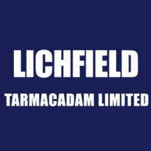

Trade Mark Journal No.2025/049 5 December 2025
UK00004262818 11 September 2025 (37)
Mark 1
Lichfield Tarmacadam Limited
Mark 2

- Class 37
- Road surfacing; surfacing of roads; road resurfacing; road surfacing for forecourts; surfacing of car parks; resurfacing of car parks; road surfacing for farm tracks; surfacing of farm tracks; resurfacing of farm tracks; road surfacing for private roads; surfacing of private roads; resurfacing of private roads; maintenance and repair of road surfacing; renovation and repair of road surfacing; road paving; paving (road -); paving and tiling; tile laying, bricklaying or block laying; road building; paving contractor services; pavement striping; street construction; pavement marking services; concrete sealing; road marking; pavement sealing; surfacing of pavements; resurfacing of facades; preparation of floor surfaces for lining and covering; concrete sealing; pavement sealing; pavement stripping; beneath ground construction work relating to sewers; beneath ground construction work relating to plumbing; beneath ground construction work relating to drain laying; beneath ground construction work relating to pipework; constructing porches; constructing sunrooms; constructing decks; installation of insulating materials; installation of prefabricated building elements; installation of internal partitioning; installation of fabricated construction units; installation of lighting apparatus; glazing, installation, maintenance and repair of glass, windows and blinds; installing drywall panels; installation of doors and windows; installation of fixtures and fittings for buildings; ground stabilization; stabilisation of ground by vibratory compaction (services for the -); stabilisation of ground by cement injection (services for the -); stabilisation of ground by grout injection (services for the -); stabilisation of ground by insertion of reinforcing bars (services for the -); soil stabilisation; stabilisation of soil by vibratory compaction (services for the -); stabilisation of soil by cement injection (services for the -); stabilisation of soil by grout injection (services for the -); stabilisation of earth by cement injection (services for the -); stabilisation of earth by vibratory compaction (services for the -); stabilisation of earth by grout injection (services for the -); building services; tiling services; construction services; roofing services; grouting services; advisory and consultancy services relating to all of the aforesaid.
The mark is proceeding because of distinctiveness acquired through use.
Lichfield Tarmacadam Limited
Representative: Swindell & Pearson Limited